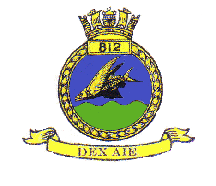
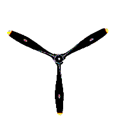

No. 812 Squadron first formed on 3rd April 1933 as a Fleet Torpedo Bomber unit, by combining 461 and 462 Flights aboard HMS Glorious, then serving in the Mediterranean. Initial equipment was 12 Rippons, but these gave way in January 1934 to 12 Baffins. When HMS Glorious returned home for a refit, the squadron transferred first to HMS Furious in June 1934, then to HMS Eagle in February 1935. Following this it remained shore based at Hal Far until HMS Glorious returned in September. In December 1936 it again re-equipped, this time with 12 Swordfish, for further service in HMS Glorious in the Mediterranean, apart from a few weeks at home in May 1937 to take part in the Coronation Review flypast at Spithead.
On the outbreak of war, HMS Glorious sailed for the Indian Ocean to search for Merchant ships and enemy raiders, but after completing a refit at Malta from January 1940 the ship was called home on the German invasion of Norway. On arrival 812 Squadron disembarked and joined RAF Coastal Command for mine-laying and bombing operations in coastal areas of Holland, Belgium, and France.
Leaving Coastal Command in March 1941, six aircraft embarked in HMS Argus to provide anti-submarine protection for a convoy ferrying RAF fighters to Malta. In July the whole squadron embarked in HMS Furious with a reduced strength of nine aircraft to participate in an attack on the Arctic port of Petsamo. This was followed by further Malta convoy escort duty, initially in HMS Furious before transferring to HMS Ark Royal in September. When that ship was torpedoed on 13th November, 812 had sufficient aircraft in the air to be able to regroup subsequently at Gibraltar.
At North Front new machines were received, equipped with ASV radar, and on the 21st December this was used to good advantage when the first night sinking of a U-boat was achieved, this being U-451. Brief spells were spent in HMS Argus and during this period shore based aircraft damaged five U-boats on the surface during anti-submarine searches before returning to the United Kingdom in USS Wasp in April 1942. Reducing to six aircraft, 812 rejoined Coastal Command in September for night operations in the English Channel, before amalgamating with 811 Squadron on 18th December 1942.
812 reformed at Stretton on 1st June 1944 as a torpedo bomber reconnaissance squadron with 12 Barracuda 11’s increasing shortly afterwards to 16. In December the squadron reached its full strength of 18 and the following month embarked in HMS Vengeance. The ship sailed to the Mediterranean in February 1945 where 812 continued its work-up, then in May sailed on to the Far East to join the British Pacific Fleet in July. However, the squadron saw no action in that theatre before the Japanese surrender. In October the squadron disembarked in Hong Kong, re-embarking at the end of the year for Australia, where it re-equipped in January 1946 with 12 Firefly FR 1’s. It remained in the Far East until the ship returned home, disbanding at Lee-on-Solent on arrival on 12 August 1946.
On 1st October 1946. 812 reformed at Eglinton with 12 Firefly FR 1’s as part of the 14th Carrier Air Group. Embarking in HMS Theseus in February 1947, the ship sailed on a lengthy Far Eastern cruise, eventually returning home in December. The squadron regrouped on 15th January 1948, and re-equipped with 12 Firefly FR 4’s in March, only to replace these with 12 Mk 5’s in July.
After embarking in HMS Ocean in August 1948, the squadron sailed to the Mediterranean where Hal Far was used as a shore base. Four Firefly NF.1’s were taken over from 816 Squadron at this time, and these were known as Black Flight, being transferred to 827 Squadron in June 1949. In September 1949 the squadron flew home to Culdrose, where it re-equipped with updated Mk 5’s, with which it returned to Hal Far later in the month.
812 transferred to HMS Glory in November 1949, still as part of the 14th C.A.G. and Black Flight was reformed, again with 4 Firefly NF.1’s. The squadron participated in several cruises and exercises during that year, landings being made on USS Midway during October. In February, Black Flight disbanded, and in March 1951 the ship sailed for Korean waters.
During 6 months of operations the squadron flew 852 sorties, which included bombing, RP attacks, strafing and bombardment target spotting. During this period three aircraft were lost and several others damaged by flak. In November the ship sailed to Australia, where the Air Group had a well-earned rest, a number of Firefly 6’s being loaned from the Royal Australian Navy during this period. Returning to the war zone in January 1952, 812 flew a further 689 sorties, of which 104 were carried out in one day. Leaving the area in May, the squadron transferred its aircraft to HMS Ocean, and the crews sailed home in HMS Theseus from Malta.
In June 1952, 812 re-equipped with 8 Firefly AS.6’s at Anthorn, and in September these embarked in HMS Eagle for an exercise and a visit to Oslo. In January 1953 the squadron joined HMS Theseus for a Spring cruise, and returning to HMS Eagle in June participated in exercises off northern Scotland, after which it disbanded at Eglinton on 20th October 1953.
812 next reformed at Eglinton on 7th November 1955 as an anti-submarine squadron with 8 Gannet AS.1’s and a T.2. In April 1956 it sailed for the Mediterranean in HMS Eagle, taking part in Fleet visits and exercises before flying home from Malta to disband on arrival at Lee-on-Solent on 13th December 1956.
|
Flt Lt F.E.Vernon. RAF 3 Apr 1933. |
|
Sq Ldr G.H. Boyce. AFC. RAF. 12 Jun 1933. |
|
L/C C.A.N. Hooper. RN. 15 Jan 1934. |
|
Sq Ldr B.B.Caswell. RAF. 29 Jan 1934. |
|
L/C C.A.N.Hooper. RN. 11 Nov 1936. |
|
Sq Ldr N.A.P.Pritchett. RAF. 23 Nov 1936. |
|
Sq Ldr J.H.Hutchinson. RAF. 26 Apr 1937. |
|
L/C J.D.C.Little. RN. 1 Nov 1938. |
|
L/C A.S.Bolt. RN. 16 Jun 1939. |
|
L/C N.G.R.Crawford. RN. 22 Apr 1940. |
|
L/C W.E.Waters. DFC. RN. 6 Sep 1940. |
|
L/C G.A.L.Woods. RN. 16 Nov 1941. |
|
L/C B.J.Prendergast. RN. 30 May 1942. |
|
Squadron disbanded. 18 Dec 1942. |
|
L/C(A) C.R.J.Coxon. RN. 5 Jun 1944. |
|
L/C D.M.R.Wynne-Roberts. RN. 25 Jan 1946. |
|
Squadron disbanded. 12 Aug 1946. |
|
L/C D.M.R.Wynne-Roberts. RN. 1 Oct 1946. |
|
L/C F.G.B.Sheffield. DFC. RN. 15 Jan 1948. |
|
L/C R.M.Fell. RN. 6 Mar 1949. |
|
L/C R.G.Hunt. RN. 17 Jul 1950. |
|
L/C F.A.Swanton. DSC. RN. 1 Mar 1951. |
|
L/C J.M.Culbertson. RN. 18 Dec 1951. |
|
Squadron disbanded. 20 Oct 1953. |
|
L/C G.D.Luff. DFC. RN. 7 Nov 1955. |
|
Squadron disbanded. 13 Dec 1956. |